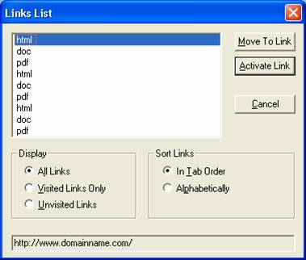
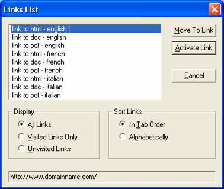
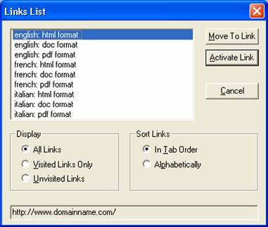

Using a screen reader, user can get the list of links.
Examples produced using the Jaws "insert+f6" command on a page
where it is possible to download files in
different formats (html, doc, pdf)
Meaningless links

The text of links is simply: "pdf", or "doc" or
"html"
User must scan the entire page
Better, but not really usable

Using the <title> attribute
A text like: "link to doc - english" is useless,
all the links begin with the same letter
Appropriate modification

A text like: "english - html format" allows grouping links
to documents written in the same language
Using the <title> or
<alt> attribute the appearance on the screen
is left unmodified, while the text in the status bar (showed
on mouse over) is